The Quietbox 2 is a personal AI computer — four Tenstorrent chips on your desk, silent and always on. Whatever your art is, the machine learns it, generates it, and plays it back in real time. This is what it sounds like when it composes jazz.
After Tangerine Dream's Hyperborea (1983). Sawtooth lead over warm pad chords
and a sequenced synth bass — no drums, just drift and texture.
Each pattern is seeded from the previous, so motifs carry forward across the three movements.
Key: E minor · BPM: 84 · Chords: Em7 → Cmaj7 → Am7 → Bm7
· Lead 2 Sawtooth + Pad 2 Warm + Synth Bass 1
Cold start — sparse emergence. Bass and pad establish the harmonic field before the lead appears.
Seeded from the void — sawtooth lead opens up (52 notes), pads fill in, bass locks the pulse.
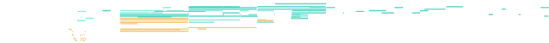
Arrival — lead and pad interweave (42n + 32n), bass anchors. The motifs from drift resolve here.
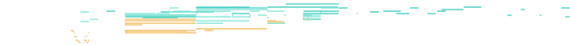
Baroque continuo texture at 76 BPM. Acoustic piano carries a singing treble line over sustained string chords — no percussion, just the keyboard-and-strings palette of Bach and Handel. String ensemble chords are velocity-boosted (90–115) for clear presence alongside the piano line. Three patterns develop from a spare exposition through fuller voicings, each seeded from the last. Chord progression: Dm → F → Gm → A7 (the A7's C# leading tone is restored by the harmonic filter on strong cadence beats).
Piano melody emerges (14n) over string chord cushion (43n). Sparse but present — Baroque opening.
Seeded from P1 — the piano opens up (38n), strings swell into full chord support (70n).
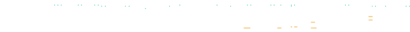
The return — familiar material in new light, the A7→Dm cadence settling into place.
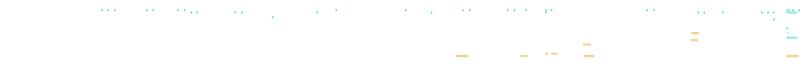
Slow Delta shuffle at 80 BPM. Acoustic steel guitar and barrelhouse piano over a shuffled kit — A7 → D7 → A7 → E7. The coherence layer uses the pentatonic minor scale (root, ♭3, 4, 5, ♭7) at strictness 0.65 — period-correct 1930s phrasing with no chromatic passing tones or dissonant tritone. Triplet swing (2:1 ratio) baked into every upbeat.
Sparse opening: guitar feeling out the changes, piano touches, a light shuffle. Delta blues in embryo.
Seeded from P1 — guitar and piano both open up, the kit locks in. Pentatonic lines settle into the shuffle.
Guitar, piano, and kit all locked in. Pentatonic lines ring clean — no blue note dissonance, pure Delta feel.
62 BPM. All four voices — string ensemble melody, warm pad harmony, synth bass, and sparse kit — emerge from almost nothing and grow across three patterns. Ebmaj7 → Cm7 → Abmaj7 → Bb. Each 8-bar loop is 31 seconds. Strict scale adherence and wider micro-timing (±16 ticks) create the floating, consonant texture of the style.
Cold-start: a single string note, a bass touch, barely anything. Silence as texture.
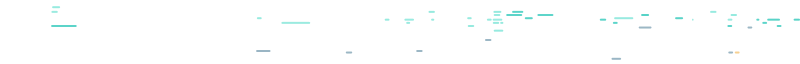
Seeded from P1 — all four voices gain presence. The pad opens. The strings breathe.
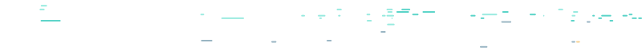
Richest texture: strings carry the melody (18n), pad fully voiced (22n), bass and kit threading through.
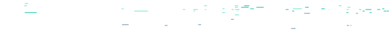
200 BPM. Piano trio texture emerged: piano comping over walking bass and ride cymbal. Bbmaj7 → G7 → Cm7 → F7. Chromatic approach notes and bebop passing tones are now preserved (scale strictness 0.25, passing-tone tolerance 1 semitone). Medium swing (0.63 ratio) applied to off-beat eighths. At this tempo each loop is 9.6 seconds — piano and drums just keep building.
Sparse opening: bass walking, piano touches chord changes, light kit. The changes assert themselves.
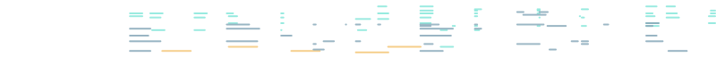
Seeded from head — piano opens up (89n), kit locks in hard. The bebop machine is warming up.
Full throttle — piano is dense (85n), drums relentless (52n), bass walking the turnaround. Chromatic lines intact.
Single-voice generation — one instrument, one channel, no accompaniment.
Lead 1 Square (GM 80) over a C major pentatonic framework at 120 BPM.
All other roles are silenced so the model concentrates entirely on the melodic line.
Each pattern seeds the next, so motifs evolve across the three takes.
Key: C major (pentatonic) · BPM: 120 · Chords: Cmaj7 → Am7 → Fmaj7 → G7
· Lead 1 Square — melody only
Cold start — 45 notes, single voice, no accompaniment. Pure melodic thinking.
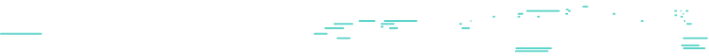
Seeded from the theme — 38 notes, melodic variation on the opening phrase.
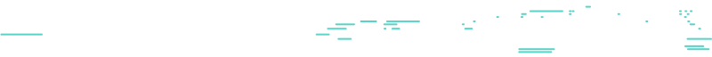
Seeded from variation — 44 notes, the line develops further before returning to the root.
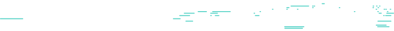
Every musical token flows through this pipeline — from a handful of parameters, through four silicon chips, out to your speakers. Each component is a gear in the machine. Nothing leaves the box.
tt-forge
compiles the 12-layer LlamaModel onto the 4-chip P300C mesh with a single
forge.compile() call. No kernel writing, no hardware-specific code —
standard PyTorch in, silicon execution out. ~45s first compile, then 121/121 JIT
cache hits on every subsequent run.
Hardware is called every 4 events (not every step). Between calls, the CPU 3-layer net_token generates with the cached hidden state. This amortises the ~500ms PCIe dispatch cost and yields 7.7 ev/s vs 2 ev/s naive.
The last 8 bars of the previous pattern are tokenized and prepended to the next prompt. The model reads the previous music before writing new material, creating coherent progressions across all four patterns.
Four passes clean up raw model output: scale quantization (D Aeolian), chord-aware filter (keeps chord tones on beats), velocity humanization (natural dynamics), and micro-timing nudge (±10ms groove feel).
Applied after model generation, not inside it. Walking bass (root → 3rd → 5th → chromatic approach), genre drum groove (shuffle, swing ride, or straight), and call-response phrase gaps — all deterministic given the chord progression. The model generates melody; the structure layer makes it sound like the genre.
Seeded random layer that adds chromatic approach notes before chord-tone downbeats, displaces note timing by ±half-beat, and transposes melodic material by a semitone shift for cross-pattern development. A tension arc (0.0 → 0.3 → 0.6) increases density from pattern 1 to pattern 3 — the music opens up as it progresses.
Eight heuristics score each generated pattern: notes-per-bar density, pitch span, unique pitches, mean/max melodic intervals, direction reversal ratio, silence ratio, rhythmic cluster ratio, and register overlap. Score = max(0, 1 − 0.12 × issues). Patterns below 0.55 are discarded and re-rolled up to 3× — the best attempt is kept.
Every note in every demo on this page was generated by a transformer running on Tenstorrent P300C chips. The bridge between standard PyTorch and that silicon is tt-forge — Tenstorrent's open-source compiler frontend. No CUDA. No custom kernels. No hardware expertise required.
Running a model on custom accelerator hardware means writing device kernels, managing memory layouts, and handling chip-specific dispatch. Standard ML frameworks don't speak hardware natively — you need a compiler layer between them.
One function call compiles your existing PyTorch module for the full 4-chip P300C mesh. The compiler handles graph optimization, kernel generation, and multi-chip dispatch. You keep writing Python.
tt-forge is what makes this practical. Running a 350M-parameter transformer on four P300C chips at real-time speed requires a compiler that understands the hardware — tt-forge handles that so the Python stays standard PyTorch. The music is the demo. The compiler is the story.
tt-forge on GitHub Tenstorrent.comRaw transformer output is probabilistic — the model generates tokens it finds likely given the context, not tokens that form a musical phrase. The result without filtering is what it sounds like: rhythmic pile-ups, melodic zigzag, silence-free walls of notes. The quality judge exists to catch this before it reaches your speakers.
Every generation call scores the result against the rules. Patterns below threshold are discarded and regenerated — up to 3 attempts per pattern, keeping the highest-scoring result.
Audit of 22 committed patterns: 86% pass rate before re-rolling was enabled. The single-voice monosynth format scored highest — two patterns at 1.00 (no issues detected).
Beyond rules: the model evaluates its own output. Two batched forward passes compute mean negative log-probability of event-type tokens — how "surprised" the model is by the sequence it generated.
Lower NLL means the model found the sequence plausible.
High NLL often correlates with audible jumble.
Available as a secondary signal via scripts/analyze_quality.py.
tt-midi-maker exposes every generation and playback capability as a standard MCP server. Connect from Claude Desktop (or any MCP-compatible client) and compose interactively — the assistant can generate loops, continue patterns, analyze what it made, and play it back through your speakers, all without leaving the conversation.
Generate a multi-track MIDI file from a natural language prompt. Returns a file path and hardware stats.
Extend an existing file by seeding the model with its last 4–8 bars. Writes a new file; original untouched.
Lock in key, BPM, style, and chord progression for the session. All subsequent generates respect these values.
Analyze a MIDI file: key, tempo, bar count, track inventory, chord guesses, style guess, prose description.
Ask any musical question about a file. "Why does bar 4 feel tense?" "How do I make this more 90s R&B?"
Enumerate all ALSA sequencer ports (USB synths, BT devices, DAW loopbacks), soundfonts, and active playback jobs.
One-shot playback via FluidSynth or any ALSA port. Per-channel routing: send melody to one synth, bass to another.
Cancel a background playback job by its job_id. Stops within ~100 ms.
Launch a persistent FluidSynth server for real-time loop playback. Call once per session before loop_play.
Start looping a MIDI file immediately — tight real-time loop, no gap between iterations, monotonic clock timing.
Queue the next pattern to take over at the next loop boundary. The current loop keeps playing until its end.
Stop the loop after the current phrase ends (clean), or immediately with all-notes-off on every channel.
Best starting point. Provide a style, optional key, and bar count — the assistant calls
set_musical_context then generate_midi and returns a ready-to-play loop.
Guided 5-step workflow: set context → generate seed → describe → extend to full length → describe final. Ideal for verse/chorus/bridge with real internal development.
Point it at an existing file and a goal ("make it more tense", "resolve the harmony"). The assistant diagnoses what's wrong and recommends whether to regenerate, continue, or re-context.
Open-ended start. The assistant asks about style, mood, instrumentation, and reference tracks, then begins generating and iterating — a co-composer in your chat window.
Active key, BPM, style, and chord progression. Read before generating to confirm the session context is set.
Connected Tenstorrent devices, active model, and generation backend. Check when generation is slow or failing.
Full styles catalog — BPM ranges, keys, roles, and example prompts for all 20 styles. Consult before prompting.
Fetch a previously generated MIDI file by name. Returns raw MIDI bytes for download or further analysis.
Every style has calibrated defaults: BPM range, typical keys, instrument roles, swing ratio, and
example prompts. Feed these directly to generate_midi
or mix and match — the model handles the rest.
The Quietbox 2 runs the 350M-parameter composition model at 7.8 events per second — fast enough that a full 8-bar phrase is written in 12.3s, while the previous one loops at 16.3s. No cloud. No latency. Your art runs on your machine.
| hw_context_interval | max_events | generation time | ev/s | loop ratio | real-time? |
|---|---|---|---|---|---|
| 1 (every step) | 64 | 35.3s | 2 | 2.5× | ✗ too slow |
| 4 (default) | 96 | 12.3s | 7.8 | 0.88× | ✓ fits in 1 loop |
| 8 | 128 | 10.8s | 11.9 | 0.77× | ✓ comfortable |
Four P300C chips. Silent. Always on. No subscription, no cloud, no rate limits. The Quietbox 2 runs models the way instruments run scales — immediately, locally, yours. This project is proof: a full multi-track composer across jazz, blues, ambient, and bebop, running faster than real time, on hardware that fits on a shelf. All of it compiled by tt-forge from plain PyTorch.
Tenstorrent.com tt-midi-maker → tt-forge →